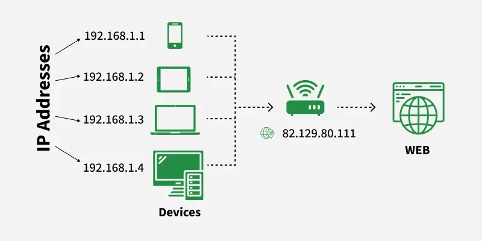
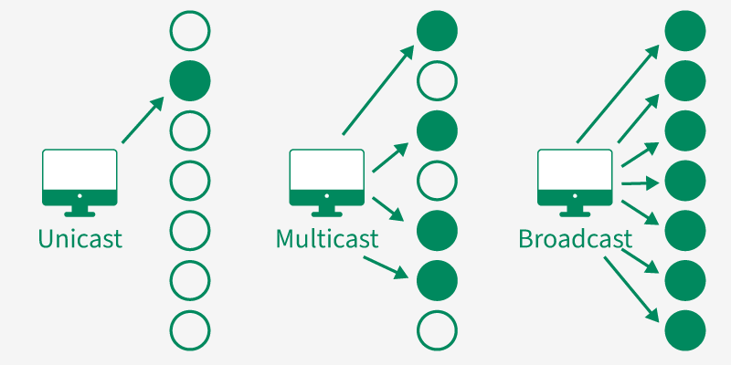

IP Addresses
Summary
- An IP address identifies devices on a network; can be dynamic or static.
What this is
- A unique numerical label assigned to each device connected to a computer network that uses the Internet Protocol for communication
- Allow to identify a device on the network & locate the dvice to enable communications with other devices

Components of an IP address
- Network Portion: Identifies the network to which the device belongs
- Host Portion: Identifies the individual device on the network
- Subnet Mask (for IPv4): Defines which parts of the IP is the network and which part is host
- Example: IP 192.168.1.10 with subnet mask 255.255 255.0
- Network ID: 192.168.1.0
- Host ID: 10
How does it work
- Alice & Bob wants to communicate, both uses their router public IP address provided by their ISPs
- Alice sends Bob a message via email, which is broken down into smaller packets, including Alice's public IP & Bob's mail server's public IP
- The packets are sent to Alice's email client and it is forwarded to a series of routers to until it arrives at Bob's email server'
- Bob can now make a request to the server to view the content via his public IP address
- The server sends the email to Bob's device
Type of IP Address
Public & Private IP address
- Public IP addresses: Assigned to every device diretly connected to the Internet
- Unique across the entire Internet
- Assigned by Internet Service Providers (ISPs)
- Example: Web servers, email servers
- Private IP addresses: Used within privste networks, not routable on the Internet
- Unique within their own network
- Used for communication between devices in the same network
- Example: Home networks, corporate networks
IPv4 & IPv6
- IPv4: 32-bit adddress, represented in dotted-decimal format i.e 185.102.12.253
- Consists of four octets (8 bits each)
- But have limited address space (~4.3 billion addresses)
- IPv6: 128-bit address, represented in hexadecimal format i.e 2001:0db8:85a3:0000:0000:8a2e:0370:7334
- Consists of eight groups of four hexadecimal digits
- Vastly larger address space (340 undecillion addresses)
- Designed to address the limitations of IPv4 and support the growing number of internet-connected devices
Static & Dynamic IP address
- Static IP addresses are permanently assigned to devices i.e servers, websites that need a constant address
- Dynamic IP addresses are temporarily assigned by DHCP (Dynamic Host Configuration Protocol), used for devices that don't require permanent addresses
Unicaset, Broadcast, Multicast & Anycast
- Unicast: One-to-one communication where data is sent from one device to another specific device i.e web browsing, file transfers (FTP), emails (SMTP)...etc
- Broadcast: One-to-all communication where data is sent from one device to all devices on the network i.e Network discovery, DHCP requests, ARP requests...etc
- Multicast: One-to-many communication where data is sent from one device to a specific group of devices on the network i.e streaming, video conferencing, online gaming...etc
- Anycast: One-to-one-of-many communication where data is sent to the nearest device in a group of devices (based on distance) i.e CDN (Content Delivery Networks) routing, DNS services...etc

Other special IP addresses
- Loopback addresses (e.g., 127.0.0.1 for IPv4, ::1 for IPv6) are used for local testing and communication within a device i.e sending data to yourself
- Broadcast addresses (e.g., 255.255.255.255 for IPv4) are used to send messages to all devices on a network
- Multicast addresses are used to send messages to a specific group of devices on a network
Why it matters (security perspective)
- IP Spoofing: Attackers can disguise their IP address to appear as a trusted source to bypass security & gain unauthorized access to systems
- Geolocation Tracking: IP addresses can be used to track users' physical locations, raising privacy
- DDOS Attacks: Attackers can use multiple IP addresses to overwhelm a target system with traffic, causing service disruptions
- Man-in-the-Middle (MitM) Attacks: Attackers can intercept communications between two parties by exploiting vulnerabilities in IP routing
- Port Scanning: Attackers can use IP addresses to identify open ports on a target system, which can be exploited for unauthorized access
Prevention/Mitigation
- Use VPNS to mask real IP addresses by re-routing internet traffic through a secure server
- Use a proxy server to act as an intermediary between the user and the internet, hiding the user's real IP address
- Implement firewalls to monitor and control incoming/outgoing network traffic based on predetermined security rules
- Use Tor browser as Tor network routes your data through multiple volunteer-operated servers (nodes), masking your IP address and encrypting your traffic